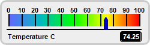
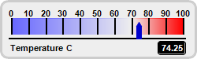
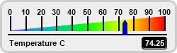
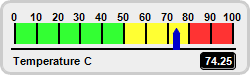

This example demonstrates horizontal bar meters in a white coloring scheme.
ChartDirector 7.1 (C++ Edition)
White Horizontal Linear Meters




Source Code Listing
#include "chartdir.h"
void createChart(int chartIndex, const char *filename)
{
// The value to display on the meter
double value = 74.25;
// Create a LinearMeter object of size 250 x 75 pixels with very light grey (0xeeeeee)
// backgruond and a light grey (0xccccccc) 3-pixel thick rounded frame
LinearMeter* m = new LinearMeter(250, 75, 0xeeeeee, 0xcccccc);
m->setRoundedFrame(Chart::Transparent);
m->setThickFrame(3);
// Set the scale region top-left corner at (14, 23), with size of 218 x 20 pixels. The scale
// labels are located on the top (implies horizontal meter)
m->setMeter(14, 23, 218, 20, Chart::Top);
// Set meter scale from 0 - 100, with a tick every 10 units
m->setScale(0, 100, 10);
// Demostrate different types of color scales and putting them at different positions
double smoothColorScale[] = {0, 0x6666ff, 25, 0x00bbbb, 50, 0x00ff00, 75, 0xffff00, 100,
0xff0000};
const int smoothColorScale_size = (int)(sizeof(smoothColorScale)/sizeof(*smoothColorScale));
double stepColorScale[] = {0, 0x33ff33, 50, 0xffff33, 80, 0xff3333, 100};
const int stepColorScale_size = (int)(sizeof(stepColorScale)/sizeof(*stepColorScale));
double highLowColorScale[] = {0, 0x6666ff, 70, Chart::Transparent, 100, 0xff0000};
const int highLowColorScale_size = (int)(sizeof(highLowColorScale)/sizeof(*highLowColorScale));
if (chartIndex == 0) {
// Add the smooth color scale at the default position
m->addColorScale(DoubleArray(smoothColorScale, smoothColorScale_size));
} else if (chartIndex == 1) {
// Add the high low scale at the default position
m->addColorScale(DoubleArray(highLowColorScale, highLowColorScale_size));
} else if (chartIndex == 2) {
// Add the smooth color scale starting at y = 43 (bottom of scale) with zero width and
// ending at y = 23 with 20 pixels width
m->addColorScale(DoubleArray(smoothColorScale, smoothColorScale_size), 43, 0, 23, 20);
} else {
// Add the step color scale at the default position
m->addColorScale(DoubleArray(stepColorScale, stepColorScale_size));
}
// Add a blue (0x0000cc) pointer at the specified value
m->addPointer(value, 0x0000cc);
// Add a label left aligned to (10, 61) using 8pt Arial Bold font
m->addText(10, 61, "Temperature C", "Arial Bold", 8, Chart::TextColor, Chart::Left);
// Add a text box right aligned to (235, 61). Display the value using white (0xffffff) 8pt Arial
// Bold font on a black (0x000000) background with depressed rounded border.
TextBox* t = m->addText(235, 61, m->formatValue(value, "2"), "Arial Bold", 8, 0xffffff,
Chart::Right);
t->setBackground(0x000000, 0x000000, -1);
t->setRoundedCorners(3);
// Output the chart
m->makeChart(filename);
//free up resources
delete m;
}
int main(int argc, char *argv[])
{
createChart(0, "whitehlinearmeter0.png");
createChart(1, "whitehlinearmeter1.png");
createChart(2, "whitehlinearmeter2.png");
createChart(3, "whitehlinearmeter3.png");
return 0;
}